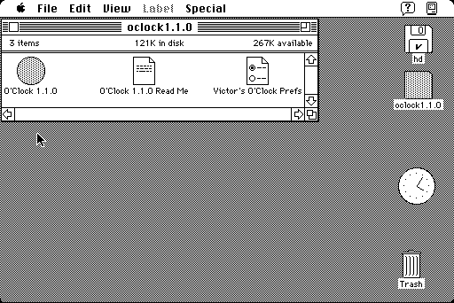

Download
oclock1.1.0.zip (37K) O'Clock 1.1.0 repackaged into a zipped hfs disk image and checksum file. The disk image can be mounted with Mini vMac.
OClock1.1.0.sit.hqx (82K) O'Clock 1.1.0 in the original format.
copyright: Victor Franco
mod date: Jan 21, 1995
license: freeware
official url
An analog clock in a circular window. Can be made icon sized and placed on the right hand side of the screen, and left running. For "Systems 7.0 and greater".

Download earlier version
oclock1.03.zip (16K) O'Clock 1.0.3 repackaged into a zipped hfs disk image and checksum file. The disk image can be mounted with Mini vMac.
oclock1.03.sit.hqx (33K) O'Clock 1.0.3 in the original format.
If you find these downloads useful, please consider helping the Gryphel Project, which hosts them.
Here are the md5 checksums for the downloads, signed with Gryphel Key 5:
--------- GRY SIGNED TEXT --------- 1dba65583f0ab99576fe0b42c18ded07 oclock1.1.0.zip 006f234ef377557c99c1c17bfc16758e OClock1.1.0.sit.hqx 45d2a8a72e83a792a5b610a46c918901 oclock1.03.zip 3c8551f20d677fd3b8805870a1de8eb8 oclock1.03.sit.hqx ------- BEGIN GRY SIGNATURE ------- Gry/4Xa8CFcUzxdN/PiPk5aztEmloNn+l3OhGcCw0pK5SQdG50w332qiWAVSpyax pLZlWCAZuq6if5zpFLmD5fQiBWvre/Kh733C7ED4oxwy7xcViJ6qQSX17Lyx80ul iSOnsARzVWs+Yb9dGRM/FB8Tajx+uyJBNdhL4FdlXBMSlXi6c4oVDZQvMePGowWB -------- END GRY SIGNATURE --------